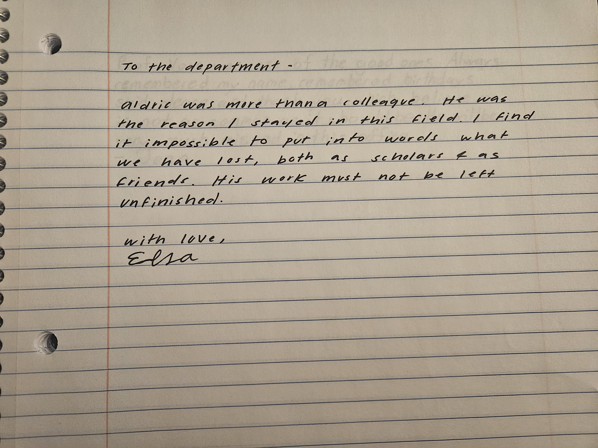
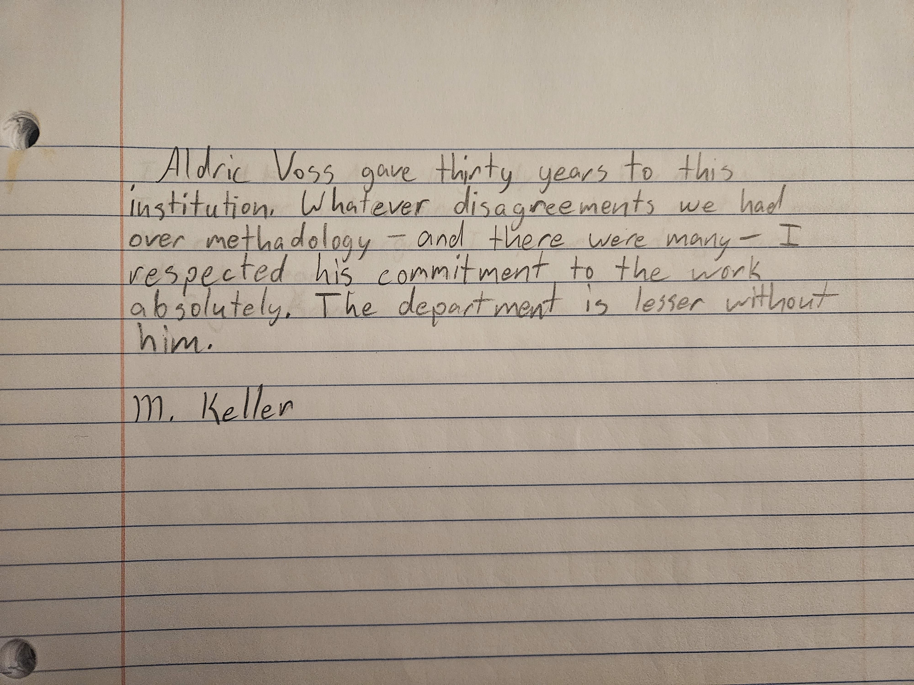
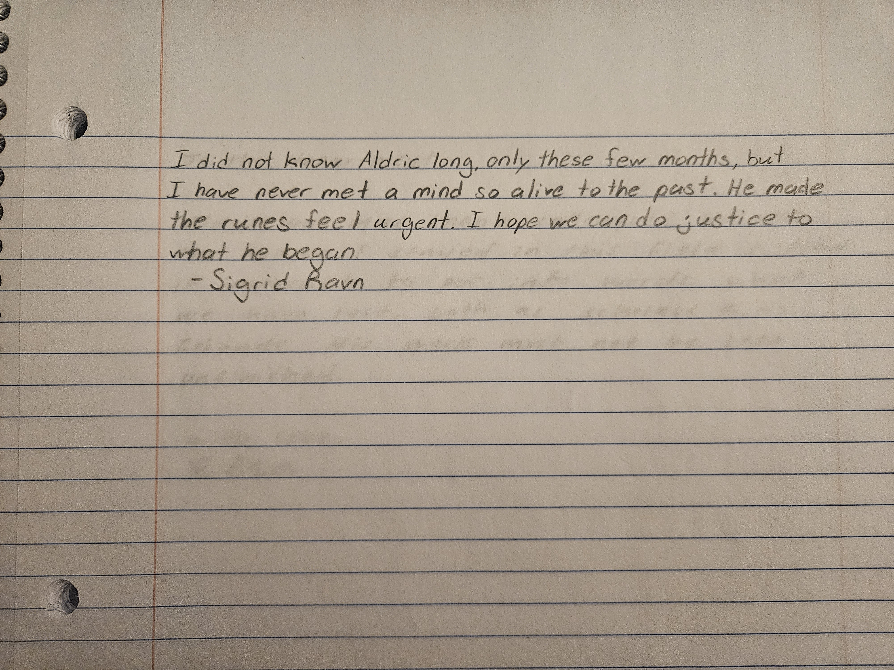
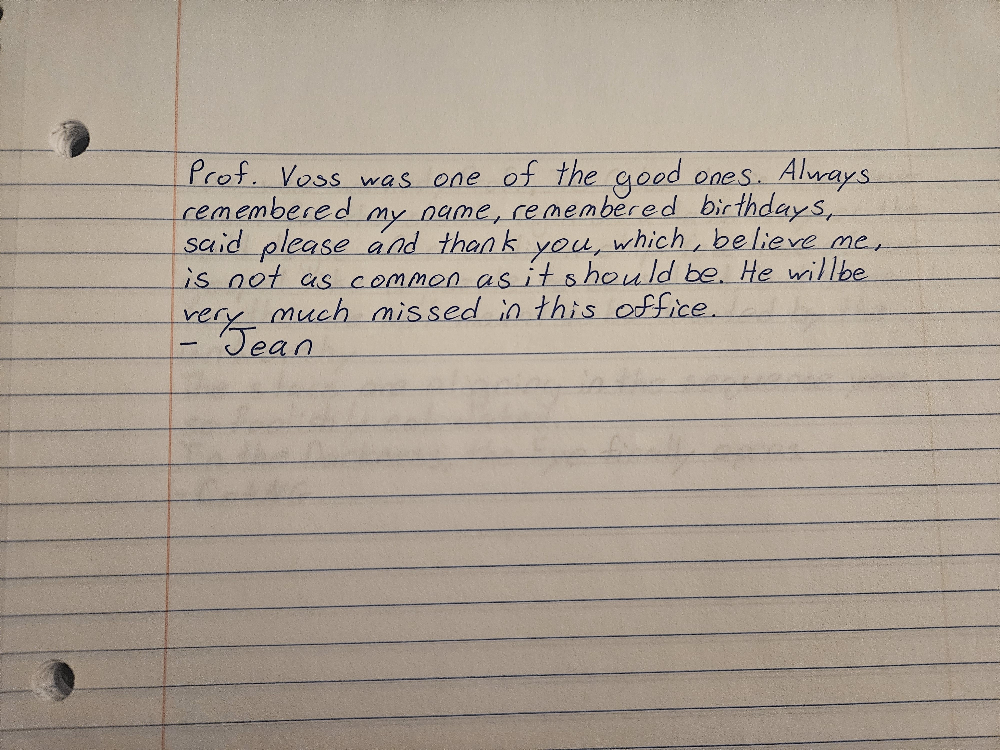

Faculty, research staff, and graduate researchers associated with the Department of Linguistics and the Runic Studies research group at Ashford University.
Note: Following the passing of Dr. Aldric Voss, sympathy correspondence submitted to the department has been archived here at the request of departmental administration. Handwritten notes from colleagues appear below each staff profile. Original letters are held in the department office.
Dr. Holt's research focuses on the intersection of runology and manuscript studies, with particular attention to fragmentary and recovered texts. She served as Dr. Voss's closest collaborator on the Codex Noctis project since 2020 and is now the primary contact for all research inquiries relating to his estate and ongoing work.

Prof. Keller has led the Department of Linguistics for eleven years. His scholarly interests lie in historical morphology and the transmission of Old High German texts. He and Dr. Voss had a collegial relationship spanning two decades, though their methodological approaches sometimes diverged sharply on questions of manuscript authenticity.

Dr. Ravn joined Ashford on a two-year visiting fellowship to collaborate on the Codex Noctis. Her expertise in Scandinavian epigraphy and stone inscription traditions proved invaluable to the project's comparative analysis. She arrived in Ashford only six months before Dr. Voss's death and has requested an extension of her fellowship to help complete the research.

Jean has managed the administrative operations of the Department of Linguistics for eighteen years. She maintains scheduling, correspondence, and archival records for all departmental staff. She is the primary point of contact for visitors, press inquiries, and matters relating to Dr. Voss's office and effects.
